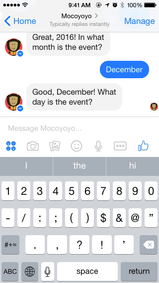
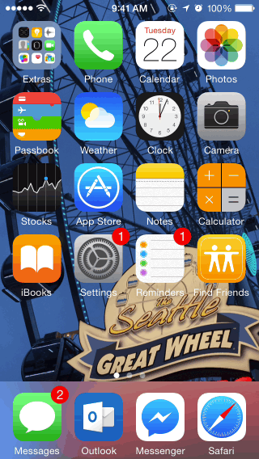

Mocoyoyo Messenger bot helps you track important events
Mocoyoyo is a bot that helps you count the days until any important date or event. For example your birthday, your next trip to Europe, your wedding, or the Chinese New Year.

It is very easy to use, simply answer four questions: year, month, day, and name of the event, and select how often you want to receive reminders.

Click here to talk to Mocoyoyo bot now!
Back to home